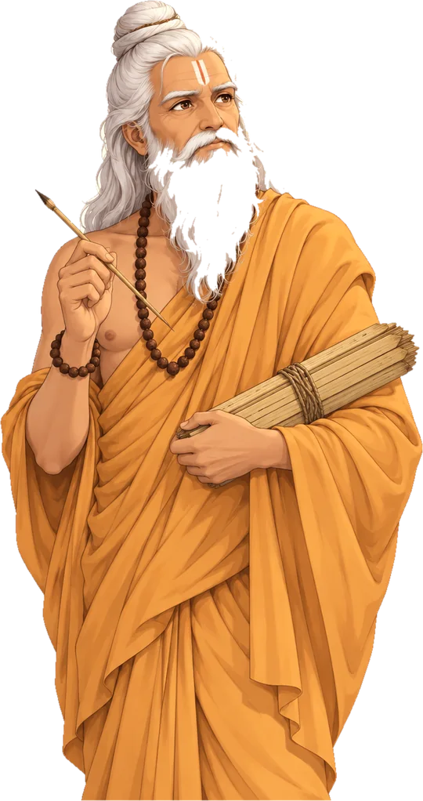
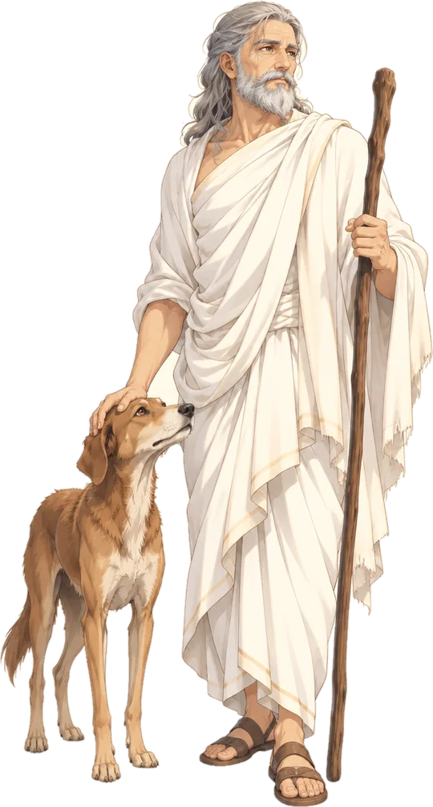
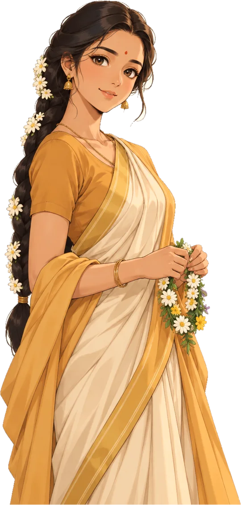

Study dossier
People of the stories
Who’s who across the six collections.


Valmiki
वाल्मीकि
Sage and poet, traditionally the author of the Ramayana.
Study dossier
Archetype & symbolism
The questioner who becomes the poet. Valmiki stands for the mind that asks before it judges, and for art born from grief: the tradition remembers that his first verse came from watching a bird killed beside its mate.
The defining moral crucible
Whether to tell Rama’s story honestly, including its costs, or to hand down a flawless hero. He chose the harder telling.
Core teaching
Ask about the whole character, not the trophy.
पुरस्कार के बारे में नहीं, पूरे चरित्र के बारे में पूछो।
Narrative connections
SourceValmiki Ramayana, Bala Kanda 1–2 [VERIFY]
Appears in:A question, a journey, a bow
Rama
राम
Prince of Ayodhya and eldest son of Dasharatha. The Ramayana follows his life.
Study dossier
Archetype & symbolism
The person of limits: . Rama represents strength that waits for permission, power that knows its own , and a life judged by its choices rather than its victories.
The defining moral crucible
The morning of his coronation, when the promise made to Kaikeyi turned a kingdom into an . He kept the father’s word at the price of his own future.
Core teaching
Learn the way back as carefully as the way forward.
आगे का मार्ग जितनी सावधानी से सीखो, लौटने का मार्ग भी उतनी ही सावधानी से सीखो।
Narrative connections
SourceValmiki Ramayana, Ayodhya Kanda [VERIFY]

Krishna
कृष्ण
An avatar of Vishnu. His childhood in Vraja is told in the Bhagavata Purana.
Study dossier
Archetype & symbolism
The friend who is also the teacher. Krishna stands for play and counsel together: the flute in and the charioteer’s voice at Kurukshetra belong to one figure.
The defining moral crucible
Arjuna lowering his bow between two armies. Krishna answered despair not with comfort but with a way of acting without clinging to results.
Core teaching
Your right is to the action, never to its fruit.
तुम्हारा अधिकार कर्म पर है, उसके फल पर कभी नहीं।
Narrative connections
SourceBhagavad Gita 2.47; Bhagavata Purana, Skandha 10
Appears in:Beneath a lifted mountainDhruva
ध्रुव
A young prince whose steadiness earns him a place as the pole star.
Study dossier
Archetype & symbolism
The child who turned rejection into resolve. Dhruva stands for : the slow inner heat that makes a small person fixed, like the pole star named after him.
The defining moral crucible
Pushed from his father’s lap, he could have hated. He went to the forest and sought something that could not be taken away.
Core teaching
A fixed point is made, not found.
अटल बिंदु मिलता नहीं, बनाया जाता है।
Narrative connections
SourceBhagavata Purana, Skandha 4 [VERIFY]
Appears in:A place beyond the palace
Shiva
शिव
One of the principal deities. He receives the descending Ganga in his hair.
Study dossier
Archetype & symbolism
Stillness that holds the river. Shiva is the ascetic and the householder at once: the one who receives Ganga’s fall in his hair so the earth is not broken.
The defining moral crucible
Whether to let Ganga descend with her full force, which would shatter the world, or to receive it. He took the weight himself.
Core teaching
What falls on a steady mind becomes a river, not a flood.
स्थिर मन पर जो गिरता है वह बाढ़ नहीं, नदी बनता है।
Narrative connections
SourceValmiki Ramayana, Bala Kanda, Sargas 42–44 [VERIFY]

Devi
देवी
The Goddess, whose deeds are told in the Devi Mahatmya.
Study dossier
Archetype & symbolism
Power that answers when it is asked. In the Devi Mahatmya the goddess rises from the combined light of the gods and meets a king and a merchant who have lost everything with the same question: what do you want?
The defining moral crucible
Suratha asked for his kingdom back; Samadhi asked for knowledge. The goddess granted both without ranking them.
Core teaching
Two people can ask differently and both be answered.
दो लोग अलग-अलग माँग सकते हैं और दोनों को उत्तर मिल सकता है।
Narrative connections
SourceDevi Mahatmya (Markandeya Purana), chapters 1 and 13 [VERIFY]
Appears in:Two requests beside the river
Ganesha
गणेश
Son of Shiva and Parvati, honoured at the start of every undertaking.
Study dossier
Archetype & symbolism
The threshold. Ganesha is remembered first because he stands at beginnings: the one who removes obstacles, and the one who places them when a path should not be taken.
The defining moral crucible
A race around the world against his brother. Ganesha walked around his parents instead, and the judges accepted that this was the world.
Core teaching
The nearer world is sometimes the whole world.
निकट का संसार कभी-कभी पूरा संसार होता है।
Narrative connections
SourceShiva Purana, Rudra Samhita [VERIFY]
Appears in:The nearer world
Yudhishthira
युधिष्ठिर
The eldest Pandava, known for truthfulness. He walks toward heaven with a dog at his side.
Study dossier
Archetype & symbolism
The ruler who would rather lose than lie. Yudhishthira represents as a practice of refusing shortcuts, even at the gates of heaven.
The defining moral crucible
Invited to enter heaven alone, without the dog that had walked the whole road with him. He refused.
Core teaching
Loyalty is measured at the door you could walk through alone.
निष्ठा उस द्वार पर मापी जाती है जहाँ से तुम अकेले जा सकते थे।
Narrative connections
SourceMahabharata, Mahaprasthanika Parva [VERIFY]
Appears in:The companion he would not leaveNarada
नारद
A celestial sage who travels between worlds carrying news and questions.
Appears in:A question, a journey, a bow
Sita
सीता
Daughter of Janaka, found as an infant in a furrow of the earth. Rama’s wife.
Lakshmana
लक्ष्मण
Rama’s younger brother, who follows him into the forest.
Vishvamitra
विश्वामित्र
The sage who takes Rama and Lakshmana from Ayodhya to guard his rite, and teaches them on the way.
Appears in:A question, a journey, a bowJanaka
जनक
King of Mithila, Sita’s father, and keeper of Shiva’s bow.
Appears in:A question, a journey, a bowHanuman
हनुमान
A vanara of Kishkindha devoted to Rama. He leaps across the sea to find Sita.
Bharata
भरत
Rama’s brother, who refuses the throne and rules in Rama’s name until he returns.
Guha
गुह
Chief of the Nishadas and Rama’s friend beside the Ganga.
Appears in:Promises and partingsShabari
शबरी
An ascetic of the forest who waits for years to welcome Rama.
Appears in:An absence, a welcome, a way onwardJatayu
जटायु
The great bird who tries to stop Ravana from carrying Sita away.
Appears in:An absence, a welcome, a way onwardMainaka
मैनाक
A mountain that rises from the sea to offer Hanuman rest mid-flight.
Appears in:Across the sea, a sign of hopeGanga
गंगा
The river goddess who descends from the heavens to the earth.
Appears in:Where the river pausedBhagiratha
भगीरथ
The king whose long austerities bring Ganga down to the earth.
Appears in:Where the river pausedSuratha
सुरथ
A king who lost his kingdom and comes to the sage Medhas in the forest.
Appears in:Two requests beside the riverSamadhi
समाधि
A merchant cast out by his own family, who meets Suratha at the hermitage.
Appears in:Two requests beside the riverParvati
पार्वती
Daughter of the mountain, Shiva’s consort and Ganesha’s mother.
Appears in:The nearer worldIndra
इंद्र
King of the gods, who arrives with a chariot at the end of Yudhishthira’s journey.
Appears in:The companion he would not leave